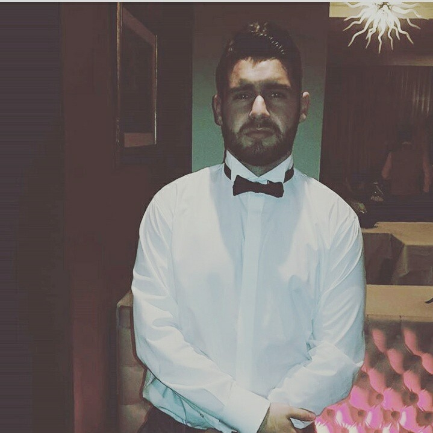
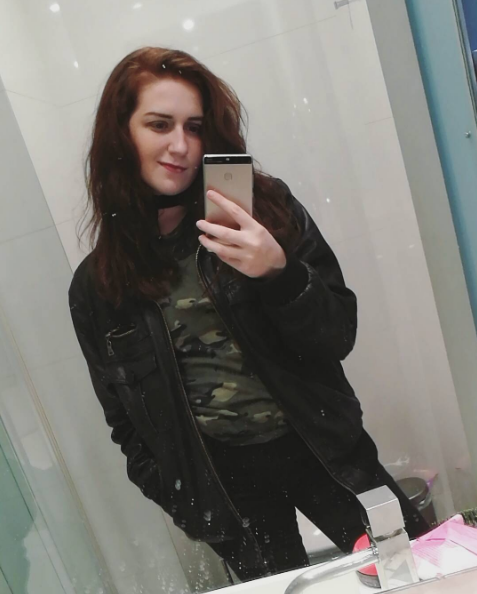
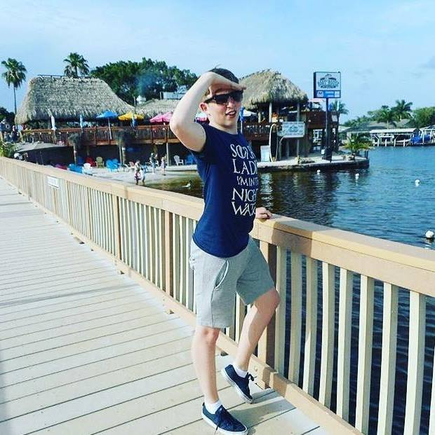

cocktail dreams.
About Us
Cocktail Dreams
Cocktail Dreams was founded in 1874 by all of our grandparents. The name "Cocktail Dreams" came about after Kevins great-great-great-great Grandfather, Kevin Sr-Sr-Sr-Sr.
found a place with the same name in Greece. He saw a way of moulding it in to what we have today. Kevin Sr-Sr-Sr-Sr employed 4 more people, Ailis Sr-Sr-Sr-Sr, Kaitlyn Sr-Sr-Sr-Sr,
Aidan Sr-Sr-Sr-Sr and the notorious, infamous, handsome....Clive. He's Peter's great-great-great-great grandfather. His family doesn't do names like the rest. Clive's ideas differed
from the rest, he felt that Cocktail Dreams should only produce Irish pure alcohol. The rest disagreed. They felt that all alcohol should be accepted. Even if the alcohol comes from
non-alcoholic backgrounds. Clive called these alcohols 'MudFloods'. So he built a chamber without the knowledge of the other Founders. In it, he hid a load of Pure Alcohols and a
massive snake. His heir, Peter, is now able to open the chamber and relsease the huge snake to drink all the MudFloods and this is just the plot to Harry Potter and the Chamber
of Secrets. In reality, this website was founded in 2017 as a college project and has grown into the company you see before you
Our Aims
We set out to provide a helpful service that provids for all the cocktail-enthusiasts and even beginners out there. With minimal effort, you can become a master of the Cocktail Bar.Assemble the ingredients and tools, and follow our guide to making the best cocktails around. For an even more immersive expierence, join our Premium Membership Programme to get
greater access to our site, with Premium-only videos to help you along the way to Cocktail-Greatness. You will also have the ability to post your own creations, and become
the talk of the Cocktail town.
The Cocktailors
Kevin Carmody
DoB:02/03/1997
Place of Birth:Dublin
Favourite Drink:Martini
About Him:Kevin is the lead developer of the website you see before you. He could make a website about
a dead giraffe and it would look classy. Not only can he whip up a bad-ass website, he can whip up some bad-ass cocktails
too. If you ever need a Martini, Kevin is your man. You and your friends can BOND over his Maritnis. Shaken...but not stirred
Kaitlyn Candy
DoB:24/03/1997
Place of Birth:Carlow
Favourite Drink:Mojito
About Her:Kaitlyn is a head developer on the Cocktail Dreams app. If you haven't seen it yet...well neither have
we, but trust us, its going to be fresh as a Mojito on a beach in The Bahamas during 'El Niño'.
Speaking of Mojito, have you tried Kaitlyn's? Its like drinking Martin Luther King Jr.'s dream.
Aidan Maher

DoB:02/03/1995
Place of Birth:Dublin
Favourite Drink:Long Island Iced Tea
About Her:Aidan Maher is Maher than just a man. He's a machine. He literally lived for weeks with a bionic leg.
His Ice Tea's are dreamy. A bit like him. His tall, ginger prowess makes the ladies of NCI slip in their
self-created puddles. Puddles of Iced Tea of course, as you can't help but drink too much.
Ailis Curran
DoB:18/02/1997
Place of Birth:Dublin
Favourite Drink:Piña Colada
About Her:Ailis is a lead developer on the app. Her fierce attitude and competitive mindset will strike fear into
anyone who tries to call themselves our competitor.However, her soothing Piña Colada's will soon calm our
competitors and they'll be forced to admit that we're the greatest Cocktailors to have ever roamed the Earth.
Peter Finegan
DoB:28/03/1997
Place of Birth:Heaven
Favourite Drink:White Russian
About Her:Peter is a head developer on the website. He created the page your staring at right now. See how attrative
this page is? He modelled it after himself. Yeah. He's THAT attractive. He's a lovely White Irish man. Speaking
of white nationalties, his White Russians are good enough to make the Russians themselves love everyone else.